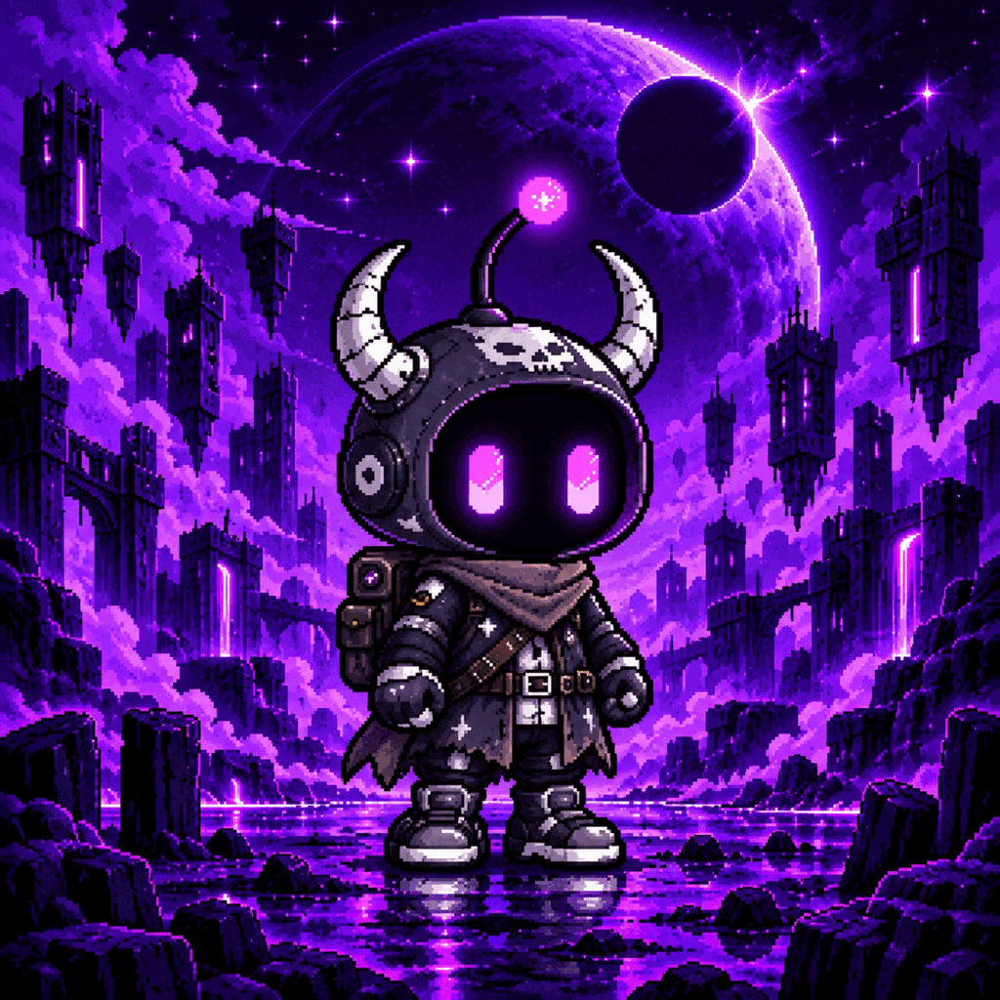

GTD Allowlist
September 10 · 12:55–13:25 UTC

The universe is reconnecting
Numbered Realm Editions, rare frequencies, and three signals hidden beyond the known network.
Long before the ten Realms were known, existence was connected by a living network of energy called The Signal. It flowed through planets, forgotten machines, ancient ruins, and the darkness between stars.
Then came The Fracture. A mysterious anomaly forced the network to divide itself into ten isolated Realms. From its scattered frequencies emerged the Signal Sprites—small custodians with erased memories and cores tuned to the worlds in which they awakened.
The Realms were not separated by accident. They were isolated to contain something that had learned to imitate The Signal itself.
The Hollow is listening.Select a Realm to open its transmission and discover its place in the universe.
Countdown to Phase 1
September 10 · 12:55–13:25 UTC
September 10 · 13:25–13:55 UTC
September 10 · 13:55 UTC
Ends September 17 · 13:55 UTCThree pulses were discovered beyond the ten Realm frequencies. The last carried no Realm Number—only one classification and one designation.